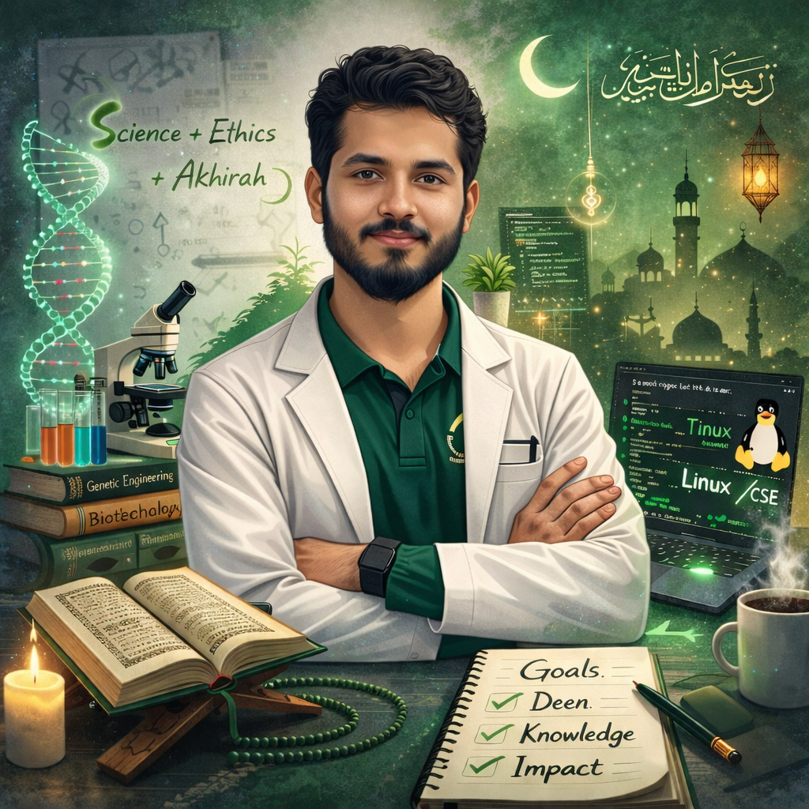

Bioinformatics Specialist · Full-Stack Developer · Data Analyst
Transforming Biological Data into Actionable Insights

Designing automated RNA-seq & scRNA-seq pipelines using R/Seurat for disease research and drug discovery. Producing publication-ready visualizations and statistical outputs.
Building full-stack educational platforms with glass-morphic design, bilingual (EN/BN) content, and interactive features serving 200+ active users across SUST campuses.
Applying EDA, statistical modeling, and machine learning to biological and real-world datasets. Creating automated data pipelines and actionable business insights.
I am a 4th-year Genetic Engineering & Biotechnology student at Shahjalal University of Science and Technology. I bridge the gap between biology and computer science by writing code to analyze biological data and building clean web platforms to share that knowledge.
I love using data science and programming to solve complex biological questions, making research results clear, interactive, and easy for everyone to understand.
Began exploring Android customization early, learning Android rooting, custom ROM porting, and GSI (Generic System Image) deployments to upgrade legacy devices. This hands-on customization built a strong base in Linux file structures and system logic.
Secured 87th in SUST and 43rd in JnU in the GST admission tests. While possessing options for CSE at other top campuses, chose Genetic Engineering and Biotechnology (GEB) at SUST, setting out to master bioinformatics and merge biology with computing.
Aced the department's non-major Python lab course (CSE114J) taught by Eamin Sir (CSE Dept) with a dream 100% score (10/10 attendance, 30/30 lab quizzes, and 60/60 final lab test), solidifying core programming paradigms.
Coordinate 15+ university events annually (freshers reception, career programs) for 500+ attendees. Manage logistics, vendor coordination, and strategic communications.
Contribute to organizing major university events (freshers reception, career programs, health camps). Assist in coordinating medical health camps, study tours, and logistics for students.
Develop data analysis solutions using Python, Google Sheets, and statistical modeling. Create automated data pipelines and conduct EDA to generate actionable business insights.
Design and implement automated RNA-seq analysis workflows using R/Seurat for disease & drug discovery. Generate publication-ready outputs and mentor junior researchers.
Tutor students in Python Programming Language (online & YouTube), ICT, Biology, Chemistry, English, Bangladesh & Global Studies, and Islam & Moral Education. Design customized study plans and exam preparation strategies.
Active competitive programmer with Codeforces rating: 923. Participated in the "ShallBehacken presents Intra SUST Programming Competition 2024" and successfully advanced to the final round from a non-CS major.
Optimizing hardware limits for heavy bioinformatics pipelines and web dev builds.
/\ / \ /\ \ / __ \ / ( ) \ / / \ \
OS: EndeavourOS (i3wm / X11)
Host: HP EliteBook 840 G3 (2016)
Kernel: Linux 6.x (Arch-based rolling)
Uptime: Up & running
Resolution: 1366x768 (13.9-inch)
WM: i3wm (X11 / startx)
CPU: Intel i5-6300U @ 2.40GHz (2C/4T)
GPU: Intel HD Graphics 520 (i915)
Memory: 16GB DDR4 (Dual Channel @ 2133MT/s)
Storage: 256GB HUADISK SATA NGFF SSD
Network: Broadcom BCM43142 (wl)
Restored a hidden 7.6GB swap partition, mapped to /etc/fstab to eliminate out-of-memory lockups in i3wm.
Installed thermald and TLP, masked conflicting power-profiles-daemon. Idle temps stabilized at ~46°C.
Mounted old Mint home to /mnt/mint_home, replaced default folders with symlinks for zero-duplication sync across both OSes.
X11-native capture via useX11LegacyScreenshot flag. Bound to Print/Mod+Print/Shift+Print for selection, crop, blur, and clipboard piping.
Event-driven background sync for auto copy-on-select without breaking native right-click or web copy elements.
Comprehensive bilingual learning platform for GEB students with glass-morphic UI, dark mode, bookmarking, and interactive course notebooks.
Production-ready, zero-config bioinformatics pipeline for comparative single-cell RNA-seq. Supports 10x, CSV, HDF5 formats with full automation.
Interactive HTML5 bilingual (EN/BN) app for GEB331 exam prep. Covers GPCRs, kinase cascades, and signal transduction with dark mode support.
Technical workaround routing high-fidelity PC audio to Android & wireless earbuds on Linux Mint, bypassing broken Bluetooth drivers via virtual audio.
Automated BIOS upgrade for 8-year-old hardware on Linux without Windows dependency. Improved security, battery profiles, and cooling efficiency.
Collection of algorithmic solutions and competitive programming templates. Reached the final round of the Intra SUST Programming Competition as a non-CS major.
Open to collaborations, mentoring, and exciting opportunities in bioinformatics, data science, and web development.